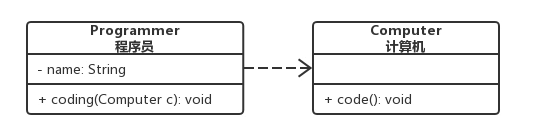
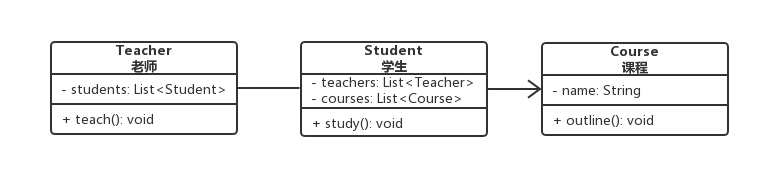
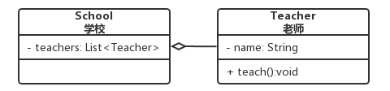
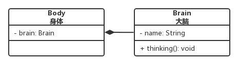
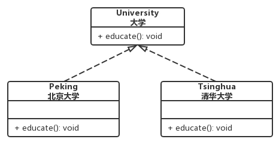
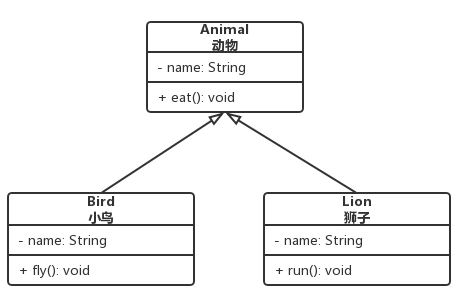

UML类图关系
💡 UML 全称Unified Modeling Language, 统计建模语言.
UML类图中有六种关系，从弱到强依次是：
依赖关系 < 关联关系 < 聚合关系 < 组合关系 < 实现关系 = 泛化关系
类的成员变量和方法前面的修饰符有public, private, protected, default，在UML类图中分别用 +, -, #, ~表示。
1. 依赖关系
通用描述: 依赖关系表示某个类依赖于另外一个类
代码表现: 某个类的方法的参数使用了另外一个类的对象
箭头描述: 依赖关系使用带箭头的虚线表示, 箭头指向被依赖的类
示例图样:


2. 关联关系
通用描述: 关联关系表示一个类和另外一个类的联系, 如老师和学生
代码表现: 某个类的成员变量是另外一个类的对象
箭头描述: 依赖关系有单向和双向, 单向使用带箭头的实线表示, 箭头指向被关联的类, 双向使用双箭头或者没有箭头的实线表示.
示例图样:


3. 聚合关系
通用描述: 聚合关系是关联关系的一种, 表示的是整体与部分之间的关系, 如学校和老师, 车子和轮胎
代码表现: 某个类的成员变量是另外一个类的对象
箭头描述: 聚合关系使用带空心菱形的实线表示, 菱形指向整体
示例图样:


4. 组合关系
通用描述: 组合关系是关联关系的一种, 是一种比聚合关系更强的一种关系, 部分不能脱离整体而单独存在, 如身体和大脑
代码表现: 某个类的成员变量是另外一个类的对象
箭头描述: 组合关系使用带实心菱形的实线表示, 菱形指向整体
示例图样:


5. 实现关系
通用描述: 实现关系是接口和实现类之间的关系
代码表现: 接口和实现类
箭头描述: 实现关系使用带空心三角箭头的虚线表示, 箭头指向接口
示例图样:


6. 泛化关系
通用描述: 泛化关系是父子类之间的继承关系
代码表现: 抽象父子与子类, 继承
箭头描述: 泛化关系使用带空心三角箭头的实线来表示, 箭头指向父类
示例图样:


总结
- 依赖关系 < 关联关系 < 聚合关系 < 组合关系 < 实现关系 = 泛化关系
| 关系名称 | 代码表现 | 箭头形式 | 箭头指向 |
|---|---|---|---|
| 依赖关系 | 方法参数 | 虚线箭头 | 指向被依赖的类(方法参数的类) |
| 关联关系 | 成员变量 | 实线箭头 | 指向被关联的类(成员变量的类) |
| 聚合关系 | 成员变量 | 实线空心菱形 | 指向整体 |
| 组合关系 | 成员变量 | 实线实心菱形 | 指向整体 |
| 实现关系 | 接口与实现类 | 虚线空心三角 | 指向接口 |
| 泛化关系 | 抽象父类与子类 | 实线空心三角 | 指向父类 |